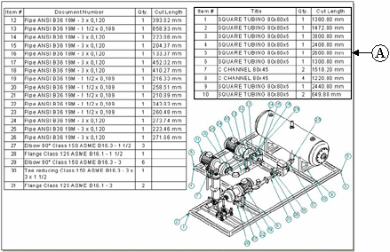

Using the Options tab
The Options tab in the Parts List Properties dialog box consolidates parts list-specific content selection properties in one location. It is where you specify item numbers, component types, and whether to generate a total length parts list.
Formatting item numbers
All properties that pertain to item number formatting are specified on the Options tab. You can:
-
Specify whether item numbers are derived from the assembly and maintained by the assembly, or whether item numbers are generated on-the-fly by the Parts List command. If items numbers are not derived from the assembly, you can use the Item Number tab to edit the item numbers from within the parts list.
Tip:You can use the Assembly Order sorting criteria on the Sorting page to display the column data in the same order as the Assembly PathFinder.
-
Specify the starting item number.
-
Specify the number to increment by.
-
Specify whether to mark items that do not have balloons, and what identifying string to use. The default mark is an asterisk (*).
-
Specify if the parts list is renumbered by changing the sort order.
The Maintain item numbers check box on the Item Numbers page (Solid Edge Options dialog box) in the assembly document controls whether item numbers are created in the assembly.
Selecting component types
You can include and exclude component types on the parts list—parts, pipes, pipe fittings, and frame members—and you can use the Move Up and Move Down buttons to change the component type display order.
You can sort the parts list by component type when you select the Component Type Order option on the Sorting page. You also can change the display order of information derived from the model document properties. Examples of these properties include file name, item number, quantity, material type, and material properties.
Specifying a total length or cut length parts list
A total length parts list shows all pipes and frame members derived from the same component displayed as a total length on the same row.
A cut length parts list (A) shows each frame member or pipe that is a different length displayed on a different row.

Cut length can be synchronized with Teamcenter. The value appears as a Note in Product Structure Editor.
It is easy to generate either type of parts list for pipes and frames. See the Help topic, Create a total length parts list.
How do I
Create a column for custom property contentCreate a column for user-defined content
Format property text values
Combine properties in a column
Group data in a table
Learn more
Editing a table directlyDefining table size and location
Using the Columns tab
Using the Title tab
Using the Data tab
Using the Sorting tab
Grouping data in tables
Look up more details
Parts List Properties dialog boxFormat Values dialog box
Format Column dialog box
Insert Row dialog box
Insert Column dialog box
Format Table Cells dialog box